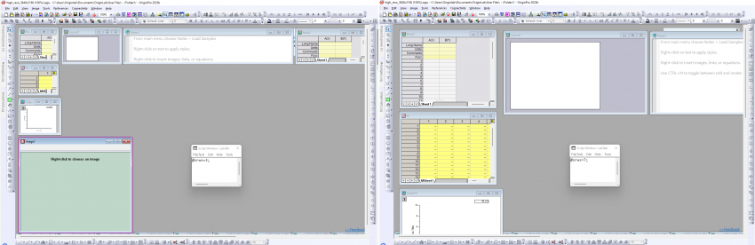

Sie können das Verhalten der automatischen Größenanpassung über die Systemvariable @MFRLA ändern oder ausschalten.
Letztes Update: 22.04.2023
Wenn Sie Ihre Origin-Projektdatei (OPJU) in Windows-Arbeitsbereichen mit verschiedenen Einstellungen, d. h. unterschiedlichen Auflösungen oder regelmäßiges Verbinden und Trennen von weiteren Monitoren auf Ihrem Computer, speichern und öffnen, kann es sein, dass Sie ein Problem beim Öffnen Ihres Projekts mit kleinen Unterfenstern bekommen.
Origin hat diesen Fehler in den Versionen immer weiter verbessert. Um ihn zu beheben, empfehlen wir ein Upgrade Ihres Origin auf Version 2023b und höher.
Damit Origin eine Projektdatei an der gleichen Stelle auf Ihrem Computer erneut öffnet, werden die Informationen zu Größe und Position im Projekt gespeichert. Demnach stimmt die Größe nicht überein, wenn Sie Ihr Projekt auf einem Monitor mit geringerer Auflösung speichern und auf einem Monitor mit höherer Auflösung öffnen. Die Fenstergröße wird angepasst, so dass die Fenster winzig und gequetscht aussehen können. (Es besteht kein Problem beim Speichern auf Monitoren mit höheren Auflösungen und Öffnen auf Monitoren mit geringer Auflösung. )
Dieses Problem wurde behoben, wenn Sie Origin maximieren und dann Ihr OPJU speichern.
Um die Größe der Unterfenster automatisch zu skalieren, damit sie für Monitore mit verschiedenen Auflösungen passt:
Das Problem wurde außerdem dahingehend verbessert, dass der Arbeitsbereich und die Unterfenster nun automatisch skaliert werden, um zur Monitorauflösung zu passen, unabhängig davon, ob Origin im Moment des Speicherns maximiert ist oder nicht. Wenn Sie das OPJU auf Monitoren mit geringer Auflösung speichern und auf Monitoren mit höheren Auflösungen öffnen, wird es skaliert, so dass der Arbeitsbereich und die Fenstergröße NICHT winzig und gequetscht angezeigt werden. Wenn Sie ein OPJU auf einem Monitor mit höherer Auflösung gespeichert und auf einem Monitor mit geringerer Auflösung öffnen, passt sich die Fenstergröße nur an, wenn das Fenster nicht zur Monitorauflösung passt. Ansonsten bleibt es unverändert.
Wenn Sie eine Projektdatei in einer älteren Version gespeichert haben und ihre Größe automatisch geändert werden soll, damit sie auf Monitore mit unterschiedlichen Auflösungen passt:
Systemvariable zum Anpassen der Fenstergröße
Es gibt eine Systemvariable @SRWS, mit der bestimmt werden kann, wie die Größe und Position der Unterfenster angepasst werden. Lesen Sie in dieser FAQ, wie Sie einen Systemvariablenwert ändern.
Bitte beachten Sie, dass diese zwei Sätze von Werten: @SRWS = 1,2,3 und @SRWS = 5,6,7, sich darin unterscheiden, dass der letztere Satz (@SRWS = 5,6,7) Fenster entsprechend des Verhältnisses zwischen Speichern und Laden der Betriebssystemauflösung skaliert. Die Skalierung erfolgt folgendermaßen: Das Rechteck der geladenen, nicht minimierten Unterfenster innerhalb des Origin-Arbeitsbereichs wird bestimmt durch das Skalieren ihrer gespeicherten Rechtecke mittels des Verhältnisses der Bildschirmskalierungen im Moment des Speicherns und im Moment des Ladens, wie vom Betriebssystem vorgegeben. Dies soll sicherstellen, dass die Anzahl der Zeilen, die in einer Arbeitsmappe sichtbar sind, sich nicht zwischen Speichern und Laden ändern.
Speichern Sie zum Beispiel das gleiche Projekt mit verschiedenen Werten für @SRWS (3 und 7) und öffnen Sie es auf einem Monitor mit geringerer Auflösung.
| @SRWS=3 | @SRWS=7 |
|---|---|
 | |
|
Alle Fenster sind sichtbar, genauso wie sie es beim Speichern waren, sie sind aber viel kleiner (d. h. zeigen viel weniger), als sie es beim Speichern waren. |
Alle Fenster haben die gleiche Größe (d. h. sie zeigen beispielsweise die gleiche Menge an Zeilen in Arbeitsblättern) wie beim Speichern, allerdings passen sie nicht alle (Bildfenster sind gar nicht sichtbar), so dass die Scrollbalken im Arbeitsbereich angezeigt werden. |
Sie können das Verhalten der automatischen Größenanpassung über die Systemvariable @MFRLA ändern oder ausschalten. |
Schlüsselwörter:winzig, klein, Monitor, Auflösung DPI, anderer Bildschirm, Anzeigegeräte, dual, tripel, zwei, drei